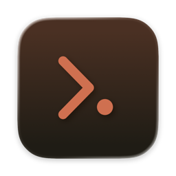

AFK Sessions
Все сессии Claude Code — в строке меню. Отошли от мака — отвечайте из Telegram.
Так выглядит панель: сессия просит разрешение и поднимается наверх — нажали «Разрешить», она работает дальше. В строке меню горит счётчик ждущих.
Отошли от мака — сессии пишут в Telegram
Включите режим «Я отошёл» пилюлей в панели или командой /afk_start — или он включится сам, когда экран заблокирован. Один ваш бот ведёт все сессии.
- Закончила ход — пишет «готово» и ждёт. Ответьте reply'ем — сессия продолжит с вашим текстом.
- Просит разрешение — кнопки «Разрешить» / «Отклонить». Решение уходит в сессию сразу.
- Работающей сессии можно написать — текст встанет в очередь и уйдёт после текущего хода.
- Скриншоты Playwright за ход приходят альбомом к «готово».
rm -rf build
Решено: разрешеноЧто умеет
Все сессии в одном месте
Каждая сессия Claude Code из терминала — строкой в панели: проект, ветка, что делает сейчас и сколько идёт. Без флагов при запуске.
Ждущие — наверху
Сессия, которой нужно разрешение, поднимается в начало списка, а в строке меню загорается счётчик. Плюс уведомление macOS.
Разрешить или отклонить без терминала
Кнопки прямо в строке сессии. С клавиатуры: ⌥Space — панель, ⌥⇧A — разрешить верхнюю.
В нужную вкладку терминала
Клик по сессии — и открывается именно её вкладка в Warp, iTerm или Terminal.
Режим «Я отошёл» и Telegram
Пилюлей в панели, командой боту или блокировкой экрана. Ответы, разрешения и очередь текста — через одного бота.
Расходы по проектам
Сколько стоили сессии за день и за неделю, по каждому проекту. Считается из транскриптов в ~/.claude.
Зачем, если есть…
AFK Sessions не заменяет официальные инструменты — он для тех, кто работает в обычном терминале на своём маке.
| Что сравниваем | AFK Sessions | Облачные сессии (claude.ai/code) | Remote Control | Telegram-канал (Channels) | Claude Desktop |
|---|---|---|---|---|---|
| Где работает сессия | ваш терминал, ваши файлы и MCP | VM Anthropic, клон из GitHub | ваш терминал | ваш терминал | окно Desktop |
| Какие сессии видно | все терминальные сразу, без флагов | облачные | подключённые (/rc или автоподключение) |
одна на бота, запуск с --channels |
свои; терминальные — нет |
| Разрешить / отклонить | в строке меню и в Telegram | в браузере/приложении | в приложении Claude, пуш | кнопками в Telegram | в окне сессии |
| Нужно | macOS 14+ | подписка claude.ai | подписка claude.ai; не с API-ключом и Bedrock | Bun, research preview | подписка |
| Сверх этого | переход в нужную вкладку терминала (Warp, iTerm, Terminal), расходы по проектам за день и неделю, очередь текста и скриншоты Playwright в Telegram | работает с закрытым ноутбуком | ответы и пуши в приложении Claude; процесс claude должен жить | — | split-view, worktree |
Закрыли ноутбук и ушлиОблачные сессии: они идут на VM Anthropic и не зависят от вашего мака. Но не видят локальные незакоммиченные файлы и ваши MCP.
Живёте в приложении Claude на телефонеЕсть подписка claude.ai — Remote Control: ответы и пуши прямо в приложении Claude. Работает с входом через claude.ai, не с API-ключом или Bedrock.
Работаете в терминале на своём макеWarp, iTerm или Terminal, с подпиской, API-ключом или Bedrock; хотите видеть все сессии разом и отвечать из Telegram одним ботом — AFK Sessions.
Сверено с документацией code.claude.com 29.09.2026.
Установка
Нужно: macOS 14+ и Claude Code в терминале.
-
Скачайте zip со страницы релиза, распакуйте и перетащите
AFKSessions.appв «Программы». -
Первый запуск. Приложение не подписано у Apple: попробуйте открыть его — macOS его заблокирует. Тогда откройте «Системные настройки → Конфиденциальность и безопасность → Всё равно открыть» или выполните в терминале:
xattr -dr com.apple.quarantine /Applications/AFKSessions.app -
В строке меню: «Настройки… → Подключение → Установить». Приложение добавит свои хуки в
~/.claude/settings.json, остальные настройки не трогает. Новые сессии Claude Code появятся в панели.
/newbot, вставьте токен в «Настройки → Telegram» и отправьте боту команду /start <код> — её покажут настройки.